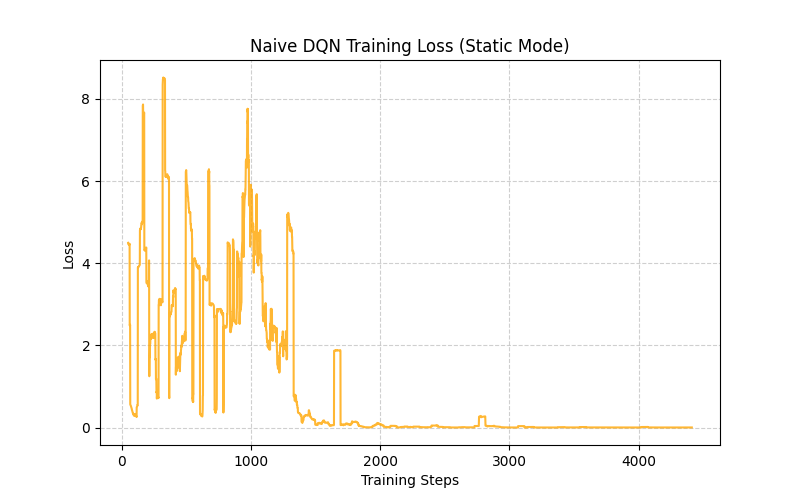
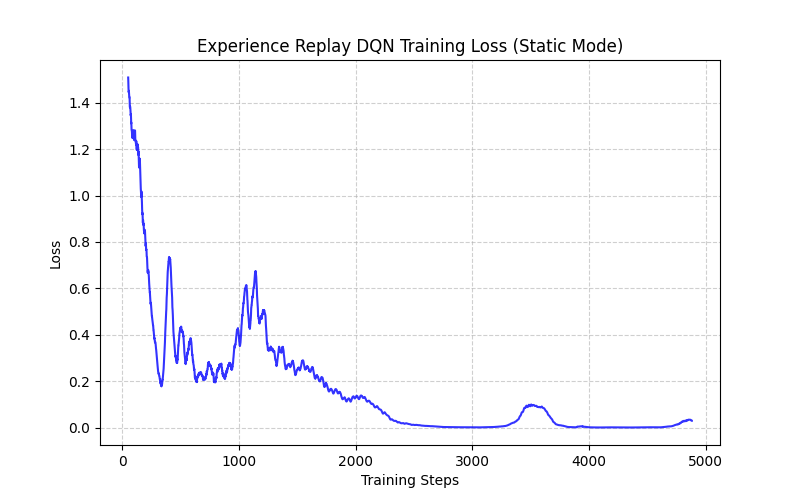
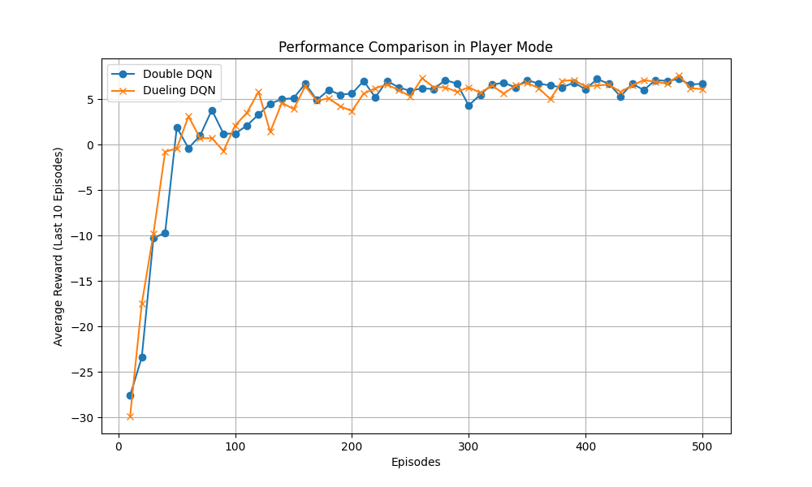
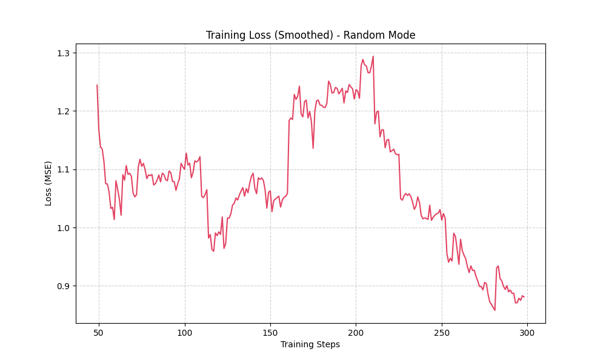

深度強化學習：DQN 變體與穩定訓練實作
檢視 GitHub 專案在基礎 DQN 的訓練中，直接使用連續收集到的經驗進行訓練，會因為資料的高度時間相關性 (Temporal Correlation) 導致網路陷入過擬合與災難性遺忘。

Naive DQN (震盪劇烈)

Experience Replay (收斂平穩)
Experience Replay (經驗回放) 透過建立一個固定容量的 Buffer 儲存歷史經驗，並在訓練時隨機抽樣。這打破了資料的時序相關性，穩定了神經網路的收斂，並大幅提升了資料的使用效率。
在起點隨機的環境中，傳統 DQN 容易面臨 Q 值高估 (Overestimation) 的致命問題。我們實作了兩種主流改良變體進行了 500 回合的對比測試：

1. Double DQN (DDQN)：透過解耦「動作選擇」與「價值評估」的網路，使用 Main Network 選擇最佳動作，再由 Target Network 計算 Q 值。有效抑制了過度樂觀的預期。
2. Dueling DQN：將網路層級拆分為「狀態價值 V(s)」與「動作優勢 A(s,a)」。在起點隨機的網格中，能極快地建立對全圖的安全價值認知，展現出優越的泛化能力。
在所有物件位置皆隨機的模式下，狀態空間極其龐大（超過 43,680 種配置），環境的極高不確定性對訓練的穩定性構成嚴峻挑戰。

我們採用了 PyTorch Lightning 框架進行模組化重構，並整合了以下關鍵技術確保收斂：
Gradient Clipping (梯度裁剪)：在隨機配置下，Agent 偶爾會遭遇極端狀態（如出生即死亡），這會產生巨大的誤差。梯度裁剪強制將異常梯度限制在安全範圍內，是確保長期訓練不崩潰的防護網。
AdamW 與 StepLR：配合權重衰減預防過擬合，並在後期動態降低學習率進行精細微調。
大容量 Replay Buffer：將容量擴增至 10000，防止 Agent 在龐大的空間中遺忘罕見的配置。